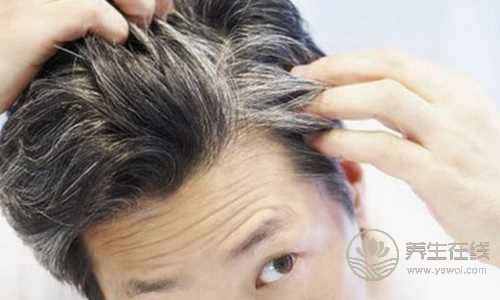

传递幸福人生
关爱健康生活
男人补肾,壮阳
妇科保养，减肥养颜
宝宝吃饭饮食健康
啪啪啪
上班族久坐保健
中老年人养生
学习掌握食疗养生
养生保健的食谱
长寿老人爱喝粥
中医叫它"夫妻菜
一年之计在于春
热以凉克之，燥以清驱之
养肾为先、温食忌硬
啪啪啪
二十四节气养生
女人练习瑜伽的好处
健身减肥瘦身
身心兼修的练举健身
气功调息、调身、调心
全民健身广场舞
有病治病，无病防病
针灸方法保健强身
穴位保健按摩
药膳养生秘诀

菠菜
芥蓝

胡萝卜

芹菜

油麦菜

菜心
芥菜
青椒

橘子

甘泽

白菜

马蹄爽

油菜

柚子

6大坚果营养大比拼,这样吃健康又抗癌!

万万没想到,长期步行的结果难以置信!

中医教你调养五脏之道,还你花容月貌!

蒜蓉粉丝蒸丝瓜
花蒸蛋

香菇蒸鸡腿

三鲜萝卜卷

柠香清蒸鲈鱼

蒜蓉蒸虾

米汤鸡蛋羹

豆豉蒸凤爪
头疼是我们最常见的病了，常常吃药对身体也不好，所以我们在日常生活中很有必要学会预防和缓解头疼的...
偏头疼是我们生活中比较常见的一种疾病，虽然不至于要命，但一旦发作起来，会严重影响到患者的生活以...
我们都会有头疼的时候，尤其是中老年人。这里，就向您介绍缓解头疼的五个简便易行的办法。
头疼恶心是什么病
民间五大坑爹的祛痘偏方
民间五大坑爹的祛痘偏方
总失眠怎么办12偏万可赶
揭10个科学证实的长寿偏方
预防脱发有哪些小偏方呢?
口腔溃疡怎么办十个偏方
胖男人更容易发生不育
男人更年期该怎么度过
过量饮用白酒对男性的影响
有哪些研究称不经常刷牙男性更有可能阳痿
黑眼圈是肾虚所致
按摩腹部三角区让男人重振雄风
男人适量饮西有好处
男性防治脱发四方法
足部护理,足部护理，不仅仅使女性的天下。男性也要进行足部护理。虽然说男性在身体护理上都比女性少，更佳会忽略了足部。那么今天，我们就告诉你，男性的足部是需要好好护理的。男性的足部护理有哪些分类呢?下面跟小编一起去...
足部护理,随着年龄增大、性功能的衰退、工作生活压力的增大等各方面原因,越来越多的男人感觉自己在性生活中开始力不从心,据统计，85%以上的男性朋友出现不同程度症状的肾虚病症。这时候他们往往会选择壮阳药弥补自己的精力不...
足部护理,都市生活中压力、疲惫的您,想在北京这个繁华的都市寻找属于自己的理疗方式。现代男人想要健身也舒服，那么就可以去按摩店，但是保健按摩自己在家也可以。
全国各省的高考成绩陆续公布，此时考生的心理问题也是不容忽视的。高考出分的前后几天，是学生「心...
成熟的人有哪些特征?我们在平时的生活中经常会听到有人说自己很成熟，或者某个人不够成熟，其实你...
胆小怕事怎么办?在我们平时生活中会有非常多的朋友有胆小怕事的情况发生，他们会在一些特定的场合...
高考前20天有哪些减压
高考焦虑测试方法
怎样缓解高考焦虑?
高考考生心理舒缓方法有哪
高考前怎样进行小理调节?
高考前如何调整心理?
010-64008287
咨询
010-65256218
咨询
010-65591900
咨询
要预防儿童龋齿的发生，这个问题是一个非常非常大的问题，因为我们要从...
手术前的准备工作，可以从下面几个方面说，我们叫术前的一些常规检查，...
所谓术后恢复就是指的刚出院这一段时间，我们叫出院近期，从大的方面讲我...
青光眼手术的治疗方法是这样，咱们就前面说过，咱们中国一般概念，手术...
青光眼从发病过程上讲它有急性的或者是慢性的，急性的青光眼往往都是那...
从我们临床上，包括我们教科书上也提到急性的青光眼发作之后，要跟另外...